Systems Design
1. WORLD ON FIRE
Daredevil, Fan Game
Roles: Systems design, UI design, environment art.
World On Fire (X-Ray Vision / Radar Sense) is a modular, post-processing effect that allows the player to see through walls to locate enemies and items of interest. The effect is achieved using a custom depth pass and a post-process material that highlights objects based on their stencil value. It has different colors for different object types, such as enemies and items, to enhance situational awareness.
Tools: UE5, Blueprints
Post-Mortem / What I learnt:
This was my first real dive into advanced materials and post-processing, and it was a huge learning curve. I was inspired by sensing abilities in games like Batman: Arkham and really wanted to build a "world on fire" mode for my Daredevil project. The biggest technical hurdle was figuring out how to use custom depth and stencil buffers to properly highlight enemies, items, and objectives through walls. I'm proud of the result because it’s a clean, reusable post-process effect that I can now easily drop into other projects to highlight any object.
2. PARKOUR SYSTEM
Daredevil, Fan Game
Roles: Systems design.
The parkour system is a comprehensive movement system that includes various mechanics such as sprinting, mantling, sliding, rolling, grappling hook, and different types of jumps (vault, double jump, triple jump, spin jump, and long jump). This is an important part of my Daredevil fan game as it focuses almost completely on combat and parkour.
Resources: Video 1 and video 2 by Matt Aspland for a single jump and climbing.
Tools: UE5, Blueprints, Mixamo

 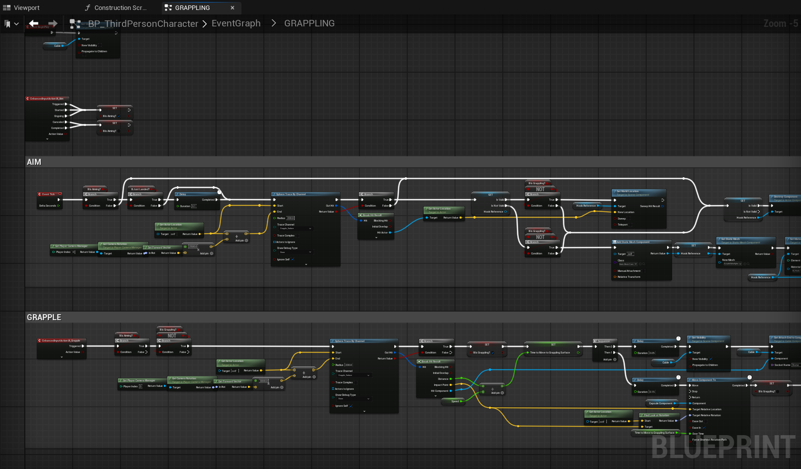
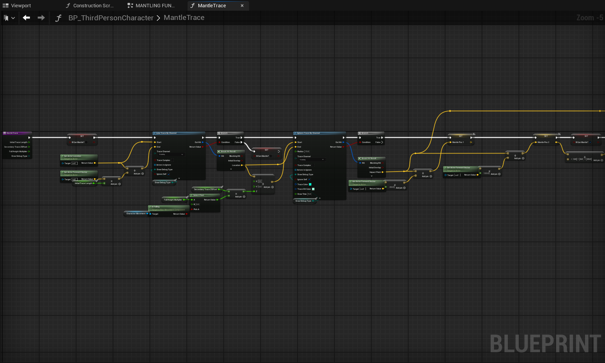
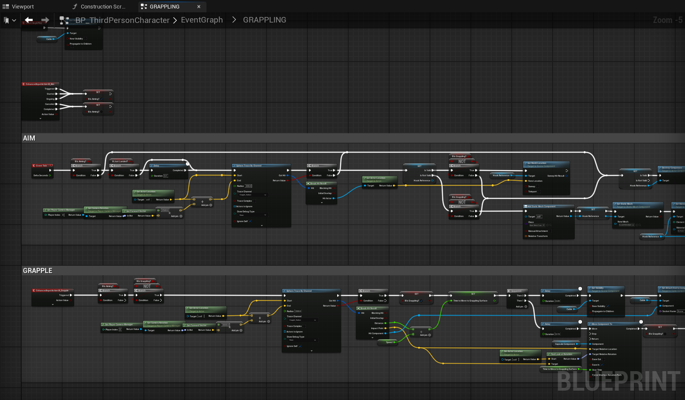
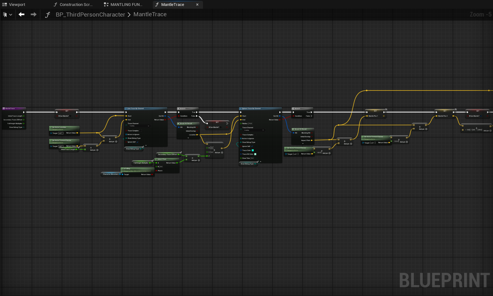
 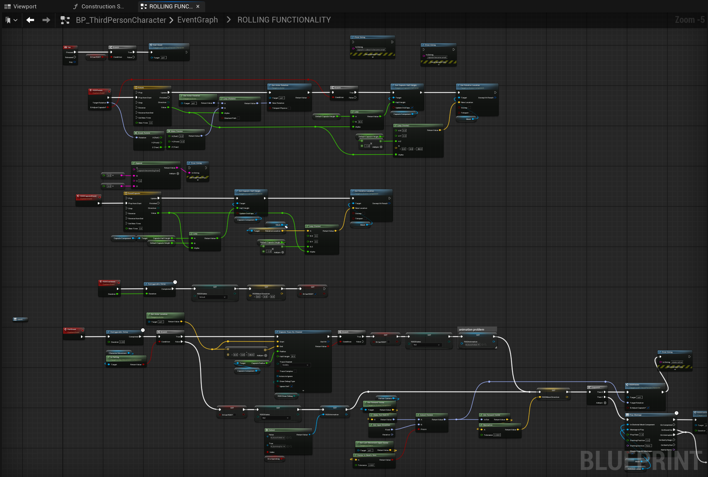
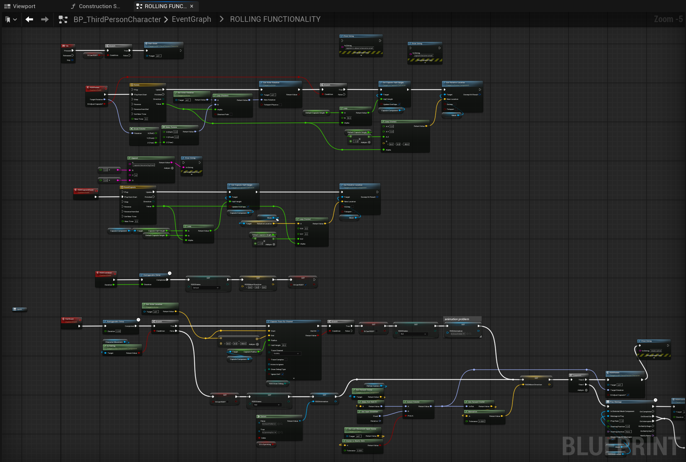

Post-Mortem / What I learnt:
This system felt overwhelmingly complex when I started, especially when thinking about all the different player states like mantling, vaulting, and sliding. Watching a few tutorials gave me a great starting point, but I quickly realized the real challenge was in adapting those lessons and building a much larger, more robust system. It taught me that a good parkour system is all about "game feel," and I was able to build a flexible system with many different jump types from the ground up.
3. INTERACTION SYSTEM
Daredevil, Fan Game
Roles: Systems design, UI design, environment art.
The interaction system is an actor component that can be added to the player to make them interact with certain blueprints. The system supports different types of interactions, such as single press, hold for any duration, and tap repeatedly any number of times.
Tools: UE5, Mixamo, blueprints
 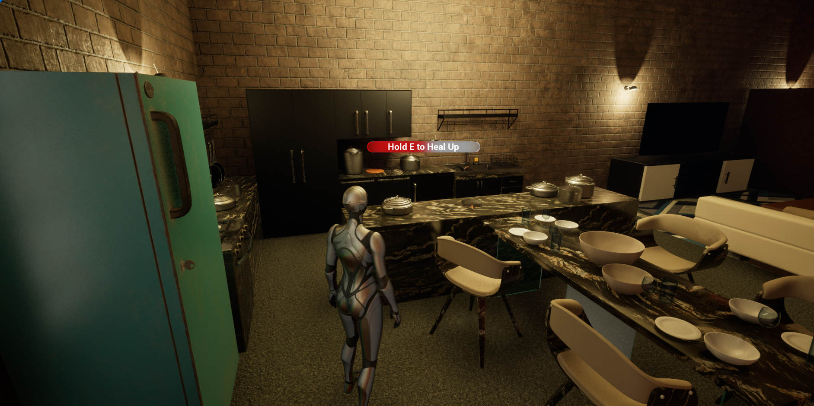
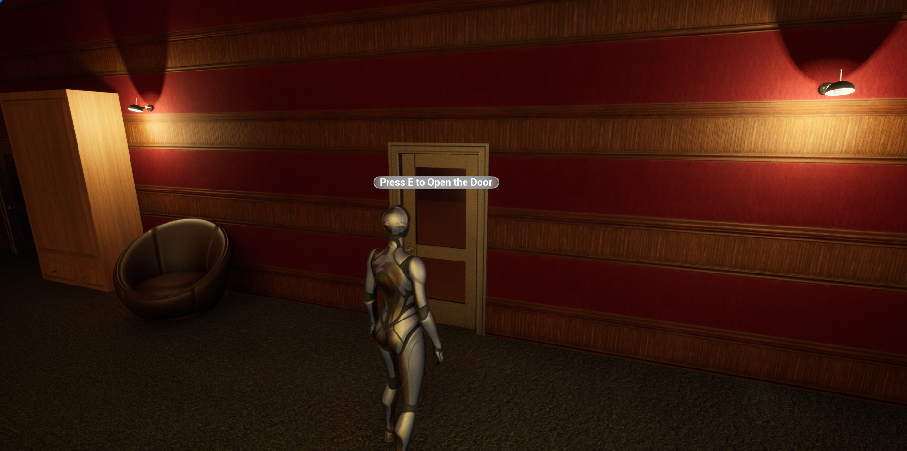
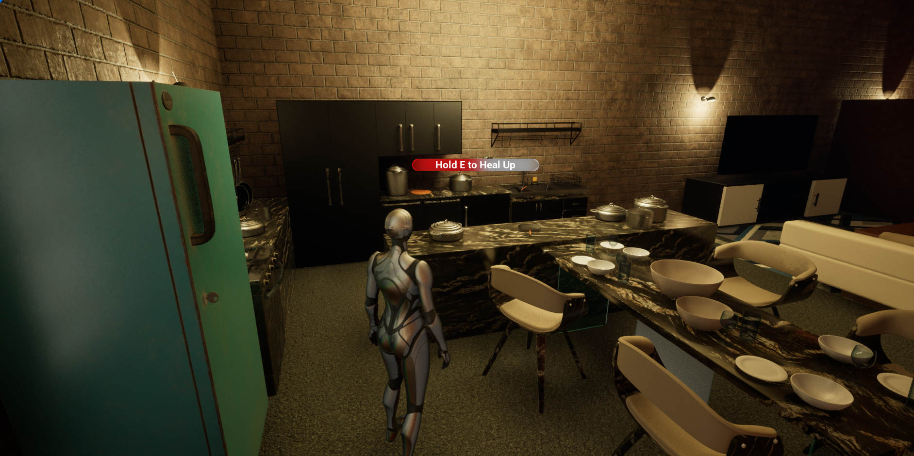
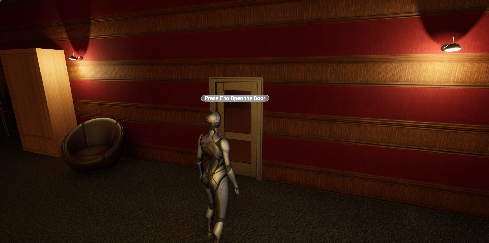


 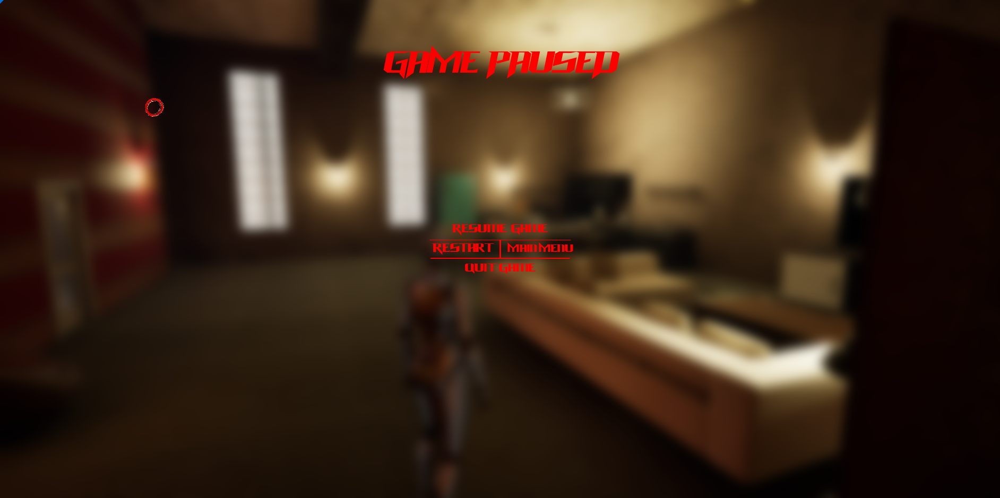
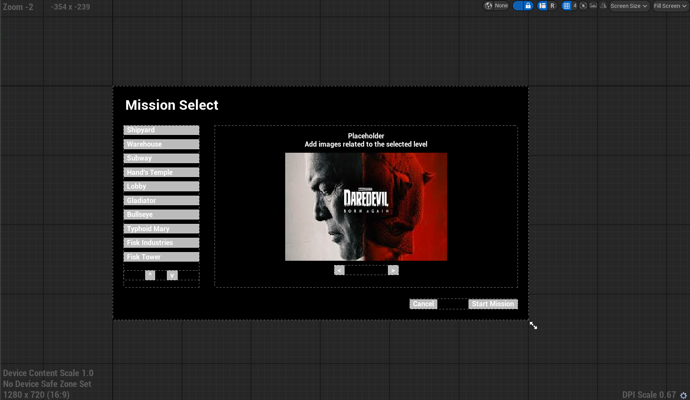
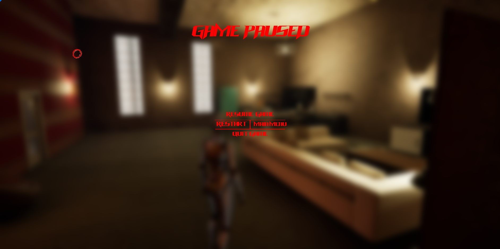
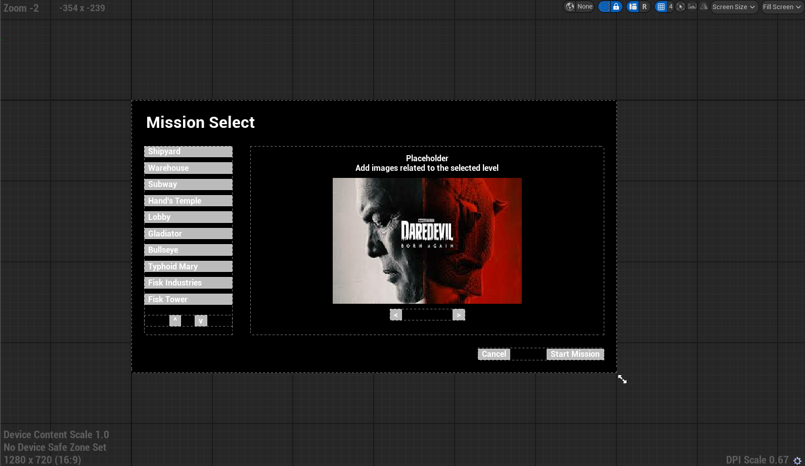
Post-Mortem / What I learnt:
I designed this system to be simple on the surface but powerful and flexible under the hood. My main goal was to build it as a modular Actor Component, which lets me just drop it onto any character blueprint and have it work instantly. I used Blueprint Interfaces to handle all the communication, which makes it super easy to add new interaction types like "single press," "hold," or "mash" without rewriting old code. This project was a great lesson in object-oriented programming, which taught me spending a little extra time on the architecture could save a lot of work later.
4. ENEMY AI
Internship Assignment, Daredevil Fan Game
Roles: Systems design, UI design, environment art.
This is a comprehensive series of YouTube videos by Ali Elzoheiry on different types of enemy AI, including melee, ranged, and magic enemies. The AI uses behavior trees and blackboards to manage their states and actions, allowing for complex behaviors such as patrolling, chasing, and attacking the player.
This is part of a learning exercise, during my time as a systems designer at Mars Games, to understand AI programming in Unreal Engine 5. The system is designed to be modular and can be easily integrated into any Unreal Engine 5 project. Link to the YouTube series by Ali Elzoheiry.
Tools: UE5, Blueprints, Mixamo, Fab

Post-Mortem / What I learnt:
This was by far the most complex system I've tackled, but I was determined to learn how professional AI is built in Unreal. I followed a very comprehensive YouTube series that did a great job of breaking down every single detail, which was the perfect way to learn such a deep topic. I finally understood how Behavior Trees and Blackboards communicate to make all the different AI states work. This project was a huge confidence boost, as I now have a solid grasp on AI, from perception and sensing to managing patrol, chase, and attack logic.